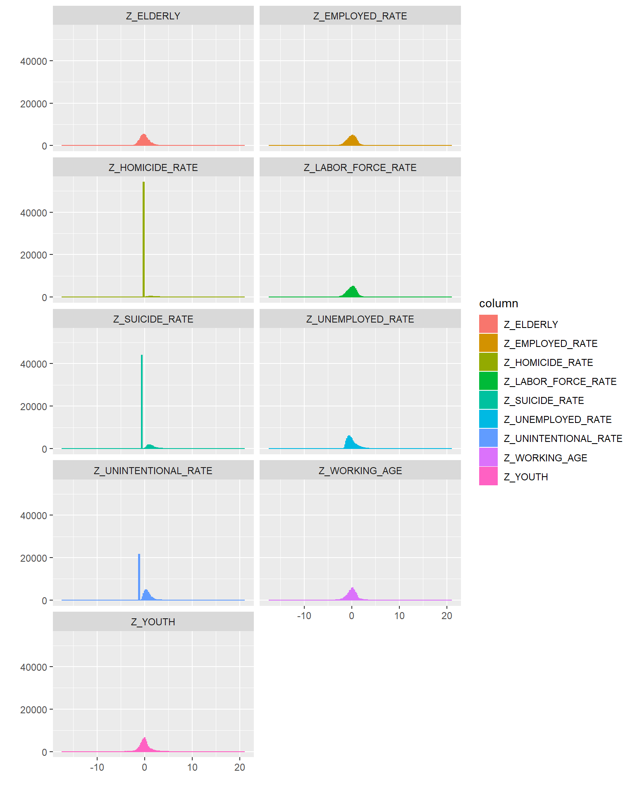
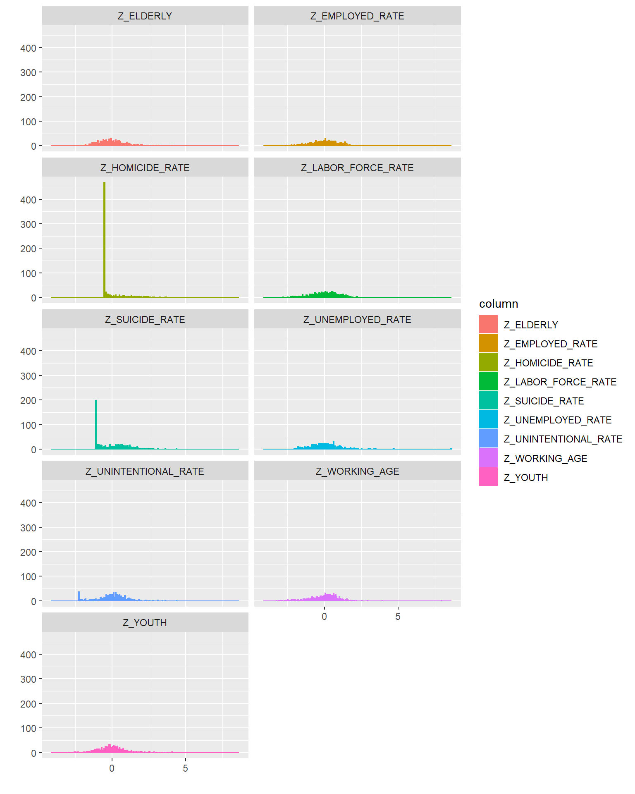

Unemployment, Suicide, and Homicide
Unemployment_Deaths.Rmdlibrary(UnempDeaths)
#> Loading required package: tidyr
library(dplyr)
#>
#> Attaching package: 'dplyr'
#> The following objects are masked from 'package:stats':
#>
#> filter, lag
#> The following objects are masked from 'package:base':
#>
#> intersect, setdiff, setequal, union
library(ggplot2)
library(rlang)This is a project that began as an idle curiousity: how might Covid-19 lockdowns affect homicide and suicide rates? This issue has been raised a few times in arguments over the lockdown; and the relationship is clearly intuitive. However, “intuitio” simply refers to immediate cognition, and to rely upon it alone allows other heuristic shortcuts to interefer and remain unchallenge. It leaves a gap for our own preconceptions and predilections to fill the gap with “too high” or “low enough”. Let us get some idea of what this relationship may actually be.
Business Understanding
Determining Objectives
While this project begins from an idle curiousity, that does not mean it is divorced from business concerns. Just as the spread of Covid-19 has created a global health crisis, so too have the lockdowns created a global economic crisis that affects every community. Each business itself is embedded in one or more such communities going through these crises. Just as many businesses are finding themselves caught up with employees or their familiy members falling ill or passing away due to Covid-19, many may also find themselves needing to addressing employees or their familiy members being damaged by the social contagion unleashed by high unemployment. How concerned should businesses be about changes in the homicide and suicide rates?
Background: Economics
This project is not concerned precisely with how much unemployment will rise. There are already many such projections in economics studies, and the level was pegged at 14.7% as recently as May 8, 2020 according to Forbes. Rather, our interest is in how unemployment could effect homicide, suicide and unintentional deaths. Thus, what exactly do the statistics mean when they say unemployment is at 14.7% or some other figure?
The standard measure of unemployment is called U-3–which includes all persons who do not have jobs, but have looked in the past four weeks. Two other measure sof unemployment, U-4 and U-5, add in “discouraged workers” and “marginally attached” workers. Discouraged workers are people who would like to work but have given up because they are convinced they cannot find work; while the marginally attached workers are people who would theoretically like to work but haven’t looked in the past four weeks. Both of these categories are of great interest, as almost definitionally they are more despondent than those experiencing U-3 unemployment.
Another issue with using unemployment figures is that some unemployment is natural. Unemployment is often divided between that caused by frictional, cyclical and structural causes. Cyclical unemployment is the least malignant: people changing jobs or just entering the workforce are unemployed for a time (most recent graduates will be in this category for a time). Cyclical unemployment on the other hand is caused by fluctuations in the economy, and structural unemployment by technological change–both of which tend to cause longer periods of unemployment as people wait on conditions to improve or retrain themselves for a new line of work. While these figures are not always readily avaialble, the existence of frictional unemployment is a reminder of why we are intersted in U-4 and U-5 unemployment rather than just U-3 unemployment.
However, should the lockdown continue for too long and businesses struggle to reopen afterwards, unemployment caused by the lockdown is liable to become more malginant: many formerly productive citizens could end up becoming discouraged or marginally attached.
Background: Sociology
Emile Durkheim, one of the fathers of sociology, wrote specifically on the foundation of suicide, creating a taxonomy of four types: egoistic suicide resulting from an individual feeling that they are not integrated into a community; altruistic suicide when a person’s sees there death in service to a community and its goals (this would encompass many martyrs); anomic suicide when a person’s lack of legitimate aspirations through a restraining social ethic–often caused by economic turmoil–leads him toward suicide; and finally fatalistic suicide, which is the result of extremely oppressive societies.
Of those types, our concern is with egoistic and anomic suicide, which seem the most closely related to an increase in unemployment. Work is an essential part of how we remain in community. To be without work is also to be without an important social network which, as much as colleagues may irritate, subordinates may exasperate, and superiors may push, also provides many people with the purpose and meaning they require in life. On the other hand, loss of the earnings from work can lead to anomic suicide.
Shifting a little to Merton’s development of Durkheim’s theories, there are societally accepted and rejected aspirations, and societally accepted and rejected means to pursue aspiractions. Most of those who have lost their jobs as a result of Covid-19 lockdowns were working to support themselves and perhaps build a family by working hard. Desprived of the legitimate means to achieve those ends, many could be pressed into some form of deviancy: rejecting normal aspirations and instead pursuing mere pleasure (videogames are relatively cheap and more immersive than ever); or using illegitimate means to pursue the same ends (Season 1 of “Breaking Bad” explored this).
Bringing in Merton helps expand this a little from suicide to both homicide and unintentional deaths. Crime is one means that allows one to support himself–though for most people it actually pays below the minimum wage. In other words, crime can support a lower-class lifestyle, but it struggles to support even a middle-class lifestyle. Moreover, by putting one’s business dealings outside the law, one loses its protection. If a low-level dealer gets mugged, it is not easy to turn to the police and he may even resort to a gang to pursue some approximation of justice. Oftentimes homicide can increase not because people are more murderous, but because more and more of their life is occuring outside the protection of the law.
Objectives
The goal here is to understand how the deathrate is affected by a change in U3 or U5 unemployment. What happens when 1% of the population moves from employed to U3 or U5? What happens if the same share of the population moves from U3 or U5 to employed? These are the objectives of our analysis.
Situation Assessment
This is a small one-man project, with limited resources and time. This project is not to go beyond any data that is readily available online. Moreover, if at the end the conclusions prove unsatisfactory, additional weeks are not going to be spent addressing them. This should keep the risks to a minimum, and any costs to merely time and effort.
Data Mining Goal
The goal of data-gathering is to find the resources necessary to construct a model measuring the relationship between U3 and U5 unemployment. Sufficiency will be determind if the model finds the variables significant. If they are not sigificant, will either attempt to move down to a greater level of detail, or (if using proxies) to a better proxy.
Project Plan
The plan for the project is simply to find the relationship unemployment has with suicide, homicide and unintentional deaths, and explain that relationship with visuals. We are using compositional data, so the plan is to use logratio transformations in combination with linear regression to model it. To judge whether the modle is significant or not, we will be using p-values and r-squared. The goal for the p-values is anything under 1%, and–as we are not pursuing complex models–the goal for the r-squared value is anything over 10% (deaths is complex, so unemployment alone cannot be expected to explain anything even approaching half of it).
Data Understanding
Initial efforts to carry out this study at the state-level were unsatisfactory, so we are going to be working with county-level data.
The three main sources of data we are working with are census data from 2000 and 2010, data on deaths in the USA from the CDC, and data on employment/unemployment from the Bureau of Labor Statistics. Our goal is a dataset with the sums of death by intent for each county in each year, as well as employment and population figures for each county. Moreover, land-area data for each county would be useful for calculating population density. Finally for good measure, in case we want to geographically cluster the counties, GPS coordinates would be most useful.
The data taken straight each census is the hardest to work with, as these are divided between multiple spreadsheets, some over 100MB, and dozens of features. To make this data more easily accessible, we are simply extracting the features we need. However, this data is merely a snapshot, so to fill in the years between we need estimates and projections. Fortunately, the census bureau has already made projects for after 2010 available up until 2018–expect 2019 in June.
Similar estimates are available between 2000 and 2010, but only for states–so we will have to make these esitmates ourselves. The census bureau’s methodology in this case is to assume steady expotential growth between 2000 and 2010, so all we have to do is solve an exponential equation for t = 2000 and 2010, and then plug in t = 2001-2009 to get their populations.
The main issue with the data instead arises from how the CDC data is distributed. There are a larger number of small counties which in a given year have no homicides or suicides–and a few that bafflingly even lack recorded unintentional deaths for the entire 20-year period we have data for.
df <- UnempDeaths::GetCleanedData() %>%
dplyr::select(- 'ESTIMATED', - 'WATER', - 'AGG_INCOME', - 'PCI_2016', - 'RATE_UNEMPLOYED', - 'ZRATE', - 'BAD_YEARS' )%>%
dplyr::mutate('YOUTH' = .data$YOUTH - .data$WORKING_AGE * 0.02,
'ELDERLY' = .data$ELDERLY - .data$WORKING_AGE * 0.02) %>%
dplyr::mutate('WORKING_AGE' = .data$WORKING_AGE + .data$WORKING_AGE * 0.04) %>%
dplyr::mutate('DISCOURAGED' = .data$WORKING_AGE - .data$LABOR_FORCE ) %>%
dplyr::mutate('DISCOURAGED' = .data$WORKING_AGE - .data$LABOR_FORCE ) %>%
dplyr::mutate('WORKING_AGE' = dplyr::if_else(.data$DISCOURAGED < 0,
.data$WORKING_AGE + .data$DISCOURAGED / 2,
.data$WORKING_AGE)) %>%
dplyr::mutate('ELDERLY' = dplyr::if_else(.data$DISCOURAGED < 0,
.data$ELDERLY - .data$DISCOURAGED / 2,
.data$ELDERLY ) ) %>%
dplyr::mutate('YOUTH' = dplyr::if_else(.data$DISCOURAGED < 0,
.data$YOUTH - .data$DISCOURAGED / 2,
.data$YOUTH ) ) %>%
dplyr::mutate('DISCOURAGED' = dplyr::if_else(.data$DISCOURAGED < 0,
0,
.data$DISCOURAGED ) )
df
#> # A tibble: 59,599 x 19
#> LONG_ID YEAR COUNTY LABOR_FORCE EMPLOYED LAND LAT LONG POP SUICIDE
#> <chr> <dbl> <chr> <dbl> <dbl> <dbl> <dbl> <dbl> <dbl> <dbl>
#> 1 01001 ~ 2018 Autau~ 26196 25261 601. 32.5 -86.5 55533 11
#> 2 01003 ~ 2018 Baldw~ 95233 91809 1608. 30.6 -87.8 217855 44
#> 3 01005 ~ 2018 Barbo~ 8414 7987 895. 31.9 -85.3 24872 0
#> 4 01007 ~ 2018 Bibb ~ 8605 8268 630. 33.0 -87.1 22367 0
#> 5 01009 ~ 2018 Bloun~ 25069 24201 652. 34.0 -86.6 57771 10
#> 6 01011 ~ 2018 Bullo~ 4791 4571 630. 32.1 -85.7 10174 0
#> 7 01013 ~ 2018 Butle~ 8973 8553 786. 31.8 -86.7 19631 0
#> 8 01015 ~ 2018 Calho~ 46307 44191 613. 33.7 -85.8 114331 25
#> 9 01017 ~ 2018 Chamb~ 15366 14775 604. 32.9 -85.3 33600 0
#> 10 01019 ~ 2018 Chero~ 11688 11276 560. 34.2 -85.6 26014 0
#> # ... with 59,589 more rows, and 9 more variables: HOMICIDE <dbl>,
#> # UNINTENTIONAL <dbl>, UNDETERMINED <dbl>, UNEMPLOYED <dbl>, DENSITY <dbl>,
#> # ELDERLY <dbl>, WORKING_AGE <dbl>, YOUTH <dbl>, DISCOURAGED <dbl>summary(df)
#> LONG_ID YEAR COUNTY LABOR_FORCE
#> Length:59599 Min. :2000 Length:59599 Min. : 38
#> Class :character 1st Qu.:2004 Class :character 1st Qu.: 5089
#> Mode :character Median :2009 Mode :character Median : 11839
#> Mean :2009 Mean : 48571
#> 3rd Qu.:2014 3rd Qu.: 31444
#> Max. :2018 Max. :5095504
#> EMPLOYED LAND LAT LONG
#> Min. : 34 Min. : 2.07 Min. :19.69 Min. :-164.79
#> 1st Qu.: 4760 1st Qu.: 435.79 1st Qu.:34.72 1st Qu.: -98.20
#> Median : 11082 Median : 622.84 Median :38.37 Median : -90.35
#> Mean : 45651 Mean : 1132.93 Mean :38.44 Mean : -92.18
#> 3rd Qu.: 29602 3rd Qu.: 934.27 3rd Qu.:41.81 3rd Qu.: -83.43
#> Max. :4860309 Max. :147197.29 Max. :70.20 Max. : -51.77
#> POP SUICIDE HOMICIDE UNINTENTIONAL
#> Min. : 55 Min. : 0.000 Min. : 0.00 Min. : 0.00
#> 1st Qu.: 11113 1st Qu.: 0.000 1st Qu.: 0.00 1st Qu.: 0.00
#> Median : 25553 Median : 0.000 Median : 0.00 Median : 14.00
#> Mean : 97413 Mean : 9.814 Mean : 4.31 Mean : 38.85
#> 3rd Qu.: 65843 3rd Qu.: 10.000 3rd Qu.: 0.00 3rd Qu.: 33.00
#> Max. :10105708 Max. :947.000 Max. :1155.00 Max. :2650.00
#> UNDETERMINED UNEMPLOYED DENSITY ELDERLY
#> Min. : 0.0000 Min. : 3 Min. : 0.04 Min. : 8.6
#> 1st Qu.: 0.0000 1st Qu.: 292 1st Qu.: 16.74 1st Qu.: 1789.8
#> Median : 0.0000 Median : 725 Median : 43.98 Median : 3811.6
#> Mean : 0.8457 Mean : 2919 Mean : 255.40 Mean : 12240.3
#> 3rd Qu.: 0.0000 3rd Qu.: 1920 3rd Qu.: 110.84 3rd Qu.: 9210.8
#> Max. :488.0000 Max. :615101 Max. :71378.87 Max. :1246402.4
#> WORKING_AGE YOUTH DISCOURAGED
#> Min. : -11 Min. : 6 Min. : 0
#> 1st Qu.: 6466 1st Qu.: 2716 1st Qu.: 1013
#> Median : 15282 Median : 6370 Median : 3116
#> Mean : 60367 Mean : 24811 Mean : 11813
#> 3rd Qu.: 39999 3rd Qu.: 16496 3rd Qu.: 8273
#> Max. :6545194 Max. :3314656 Max. :1549097Data Preparation
U5-Unemployment: DISCOURAGED WORKERS, EMPLOYED, AND UNEMPLOYMENT
Data on employment and unemployment are readily available at the county level for the period we are looking for, but not U5-unemployment. Thus, we have to figure out how to estimate the theoretical population that can work, and subtract from it the populations of employed and unemployed workers. Initially we took the popuation, subtract youths and the elderly so we only have those between 20 and 64 to get the WORKING_AGE_POP, and then subtract the size of the actual LABOR_FORCE (UNEMPLOYMENT + EMPLOYMENT)–giving us the number of DISCOURAGED wokers.
These early efforts were unsatisfactory, as many counties had a larger LABOR_FORCE than WORKING_AGE_POPULATION. Many of these were counties with large numbers of young workers, suggesting our numbers were too low. Unfortuantely, our age-data is in five-range increments, so it is a little difficult to expand the WORKING_AGE_POP to 18-66, but we can try increasing it by 4%–which should have a similar effect–then for the handful of counties where the LABOR_FORCE is still larger than the WORKING_AGE_POP, we can expand the WORKING_AGE_POP to at least match the LABOR_FORCE, thus putting the number of discouraged workers at zero.
An alternative fix if this does not work well would be to gather data on those in secondary and post-secondary schools, and expand the WORKING_AGE_POP to start from age 16 (similar to the official unemployment formula).
OUTSIDE_LABOR_FORCE: ELDERLY and YOUTH
These two variables are included partly because they are convenient. We already have the data for population by age and county, and are splitting that population into three age groups, so it is just a little extra code to use ELDERLY and YOUTH, rather than a measure of those outside of the LABOR_FORCE. However, it also makes sense to split the ELDERLY and YOUTH–particularly with respect to unintentional deaths.
DENSITY
One non-compositional feature that would be useful is popuation density. The social pathologies of rural areas, towns, and major cities are quite different from one another. This will be calculated by taking county population divided by its land area–which are both available from the census.
Bar I
df %>%
dplyr::summarize('UNINTENTIONAL' = sum(.data$UNINTENTIONAL), 'HOMICIDE' = sum(.data$HOMICIDE),
'SUICIDE' = sum(.data$SUICIDE), 'UNDETERMINED' = sum(.data$UNDETERMINED) ) %>%
tidyr::pivot_longer(tidyselect::everything(), names_to = 'COD', values_to = 'DEATHS') %>%
ggplot2::ggplot( ggplot2::aes( x = .data$COD, y = .data$DEATHS ) ) +
ggplot2::geom_bar(stat = 'identity', fill = hcl(h = 360 / 1:4 ), col = hcl(h = 360 / 1:4 ) ) +
ggplot2::xlab('Cause of Death') +
ggplot2::ggtitle('Passings by Intent Between 1998 and 2018')Histograms I
Looking at a histogram of the primary variables we are interested in, we see a curious relationship when we divide all of the data by the population and transform them to Z-Scores. The three features concerning deaths all have large spikes at about -1 standard deviations, followed by a normal distribution with modes aroudn +1 standard deviations. This phenomenon is weakest for unintentional deaths. The reason is likely because we have a large number of sparsely populated counties that can go a year without experiencing any homicides or suicides–and sometimes not even unintentional deaths.
df %>%
dplyr::transmute("Z_HOMICIDE_RATE" = .data$HOMICIDE / .data$POP, 'Z_SUICIDE_RATE' = .data$SUICIDE / .data$POP,
'Z_UNINTENTIONAL_RATE' = .data$UNINTENTIONAL / .data$POP, 'Z_LABOR_FORCE_RATE' = .data$LABOR_FORCE / .data$POP,
'Z_EMPLOYED_RATE' = .data$EMPLOYED / .data$POP,
'Z_UNEMPLOYED_RATE' = .data$UNEMPLOYED / .data$POP, 'Z_WORKING_AGE' = .data$WORKING_AGE / .data$POP,
'Z_ELDERLY' = .data$ELDERLY / .data$POP, 'Z_YOUTH' = .data$YOUTH / .data$POP,) %>%
dplyr::mutate_all( function(x){ return(( x - mean(x) )/sd( x ) ) }) %>%
tidyr::pivot_longer(cols = everything(), names_to = 'column', values_to = 'values') %>%
ggplot2::ggplot( ggplot2::aes( x = values, color = column, fill = column ) ) +
ggplot2::geom_histogram(bins = 200) +
ggplot2::xlab('') + ggplot2::ylab('') +
ggplot2::facet_wrap(~column, ncol = 2) 
Bar II & III
Let us check how many counties there are with zero deaths by intent. Here, we get a graph that resembles an inverse of the number of deaths by intent: unintentional has the fewest by far, and undetermind has the most. Perhaps it is a relief that are so many counties that have no deaths due to homicide or suicide in a year.
Out of curiousity, I decided to instead pool the years and see how many counties have had no deaths by type over the past between 1998 and 2018. Curiously, we have more than 500 such counties. Why is that? It is unlikely that the CDC is failing to keep track of deaths. More likely, there could be many counties without hospitals or elderly care facilities, so their elderly tend to perish in neighboring counties; or for some other reason their deaths are registered in neighboring counties.
df %>%
dplyr::summarize('UNINTENTIONAL' = sum(.data$UNINTENTIONAL==0), 'HOMICIDE' = sum(.data$HOMICIDE==0),
'SUICIDE' = sum(.data$SUICIDE==0), 'UNDETERMINED' = sum(.data$UNDETERMINED==0) ) %>%
tidyr::pivot_longer(tidyselect::everything(), names_to = 'COD', values_to = 'ZERO') %>%
ggplot2::ggplot( ggplot2::aes( x = .data$COD, y = .data$ZERO ) ) +
ggplot2::geom_bar(stat = 'identity', fill = hcl(h = 360 / 1:4 - 45 ), col = hcl(h = 360 / 1:4 - 45) ) +
ggplot2::xlab('Cause of Death') +
ggplot2::ggtitle('Number of Counties with Zero Deaths by Intent: 1998 and 2018')df %>%
dplyr::group_by(.data$COUNTY) %>%
dplyr::summarize('UNINTENTIONAL' = sum(.data$UNINTENTIONAL), 'HOMICIDE' = sum(.data$HOMICIDE),
'SUICIDE' = sum(.data$SUICIDE), 'UNDETERMINED' = sum(.data$UNDETERMINED) ) %>%
dplyr::ungroup() %>%
dplyr::summarize('UNINTENTIONAL' = sum(.data$UNINTENTIONAL==0), 'HOMICIDE' = sum(.data$HOMICIDE==0),
'SUICIDE' = sum(.data$SUICIDE==0), 'UNDETERMINED' = sum(.data$UNDETERMINED==0) ) %>%
tidyr::pivot_longer(tidyselect::everything(), names_to = 'COD', values_to = 'ZERO') %>%
ggplot2::ggplot( ggplot2::aes( x = .data$COD, y = .data$ZERO ) ) +
ggplot2::geom_bar(stat = 'identity', fill = hcl(h = 360 / 1:4 - 45 ), col = hcl(h = 360 / 1:4 - 45) ) +
ggplot2::xlab('Cause of Death') +
ggplot2::ggtitle('Number of Counties with Zero Deaths by Intent between 1998 and 2018')
Histograms II
Clustering the data with kmeans, than averaging yearly differences should reduce the problem of clustering around zero. This second set of histograms shows something more resembling a pareto distribution for homicide, almost a modal distribution for unintentional deaths, and something in between for suicides.
df %>%
UnempDeaths:::ClusterData(750) %>%
dplyr::transmute("Z_HOMICIDE_RATE" = .data$HOMICIDE / .data$POP, 'Z_SUICIDE_RATE' = .data$SUICIDE / .data$POP,
'Z_UNINTENTIONAL_RATE' = .data$UNINTENTIONAL / .data$POP, 'Z_LABOR_FORCE_RATE' = .data$LABOR_FORCE / .data$POP,
'Z_EMPLOYED_RATE' = .data$EMPLOYED / .data$POP,
'Z_UNEMPLOYED_RATE' = .data$UNEMPLOYED / .data$POP, 'Z_WORKING_AGE' = .data$WORKING_AGE / .data$POP,
'Z_ELDERLY' = .data$ELDERLY / .data$POP, 'Z_YOUTH' = .data$YOUTH / .data$POP,
'CLUSTER' = .data$CLUSTER) %>%
dplyr::group_by(.data$CLUSTER) %>%
dplyr::summarize_all( mean ) %>%
dplyr::ungroup() %>%
dplyr::select( - 'CLUSTER' ) %>%
dplyr::mutate_all( function(x){ return(( x - mean(x) )/sd( x ) ) }) %>%
tidyr::pivot_longer(cols = tidyselect::everything(), names_to = 'column', values_to = 'values') %>%
ggplot2::ggplot( ggplot2::aes( x = values, color = column, fill = column ) ) +
ggplot2::geom_histogram(bins = 200) +
ggplot2::xlab('') + ggplot2::ylab('') +
ggplot2::facet_wrap(~column, ncol = 2) 
Preliminary Analysis: Implications
We can address the issue of counties with zero deaths over a 20-year period in two ways. We could geographically cluster the data, but doing so risks hiding the relationships we are interested in. Moreover, many densely populated counties would be needlessly clustered together. It is probably best to drop any of the county that has had no unintentional deaths between 1998 and 2018.
Modeling
For this model, we are using lagratios with linear regression.
Variable Correlation
Looking at the population divided into five categories, let’s check how closely correlated they are. Unsurprisingly, these are closely related. A county around NYC or LA is of course goign to have more of everything. However, if we instead divide each of these variables by the county population, the correlations become far weaker.
df %>%
dplyr::select('EMPLOYED', 'UNEMPLOYED', 'DISCOURAGED', 'ELDERLY', 'YOUTH') %>%
cor()
#> EMPLOYED UNEMPLOYED DISCOURAGED ELDERLY YOUTH
#> EMPLOYED 1.0000000 0.9169815 0.9553634 0.9701906 0.9870974
#> UNEMPLOYED 0.9169815 1.0000000 0.9253462 0.8962210 0.9247881
#> DISCOURAGED 0.9553634 0.9253462 1.0000000 0.9387652 0.9581295
#> ELDERLY 0.9701906 0.8962210 0.9387652 1.0000000 0.9474215
#> YOUTH 0.9870974 0.9247881 0.9581295 0.9474215 1.0000000df %>%
dplyr::transmute('EMPLOYED/POP' = .data$EMPLOYED / .data$POP, 'UNEMPLOYED/POP' = .data$UNEMPLOYED / .data$POP,
'DISCOURAGED/POP' = .data$DISCOURAGED / .data$POP, 'ELDERLY/POP' = .data$ELDERLY / .data$POP,
'YOUTH/POP' = .data$YOUTH / .data$POP) %>%
cor()
#> EMPLOYED/POP UNEMPLOYED/POP DISCOURAGED/POP ELDERLY/POP
#> EMPLOYED/POP 1.0000000 -0.31797858 -0.85898060 -0.16273102
#> UNEMPLOYED/POP -0.3179786 1.00000000 0.17852808 -0.01233376
#> DISCOURAGED/POP -0.8589806 0.17852808 1.00000000 -0.09862951
#> ELDERLY/POP -0.1627310 -0.01233376 -0.09862951 1.00000000
#> YOUTH/POP 0.1027522 -0.06595207 -0.23023882 -0.64332469
#> YOUTH/POP
#> EMPLOYED/POP 0.10275220
#> UNEMPLOYED/POP -0.06595207
#> DISCOURAGED/POP -0.23023882
#> ELDERLY/POP -0.64332469
#> YOUTH/POP 1.00000000library(compositions)
#> Warning: package 'compositions' was built under R version 3.6.3
#> Loading required package: tensorA
#>
#> Attaching package: 'tensorA'
#> The following object is masked from 'package:base':
#>
#> norm
#> Loading required package: robustbase
#> Warning: package 'robustbase' was built under R version 3.6.3
#> Loading required package: bayesm
#> Warning: package 'bayesm' was built under R version 3.6.3
#> Welcome to compositions, a package for compositional data analysis.
#> Find an intro with "? compositions"
#>
#> Attaching package: 'compositions'
#> The following objects are masked from 'package:stats':
#>
#> cor, cov, dist, var
#> The following objects are masked from 'package:base':
#>
#> %*%, scale, scale.default
df3 <- df %>%
dplyr::select('HOMICIDE', 'SUICIDE', 'UNINTENTIONAL', 'DENSITY',
'DISCOURAGED','UNEMPLOYED', 'EMPLOYED', 'YOUTH', 'ELDERLY')
df4 <- UnempDeaths::ilr_partial(df3, c('HOMICIDE','SUICIDE','UNINTENTIONAL', 'DENSITY') )shift = 0.01 # this is NOT a 1% increase in the population, it is a 1% shift of the whole population between categories.
# in other words, 1% is more like a 2% change
model <- lm( UNINTENTIONAL ~ V1 + V2 + V3 + V4 + DENSITY, data = df4 )
U_predictions <- c(UnempDeaths::predict_logratio(df3, model, type = -3, shift = shift),
UnempDeaths::predict_logratio(df3, model, type = -2, shift = shift),
UnempDeaths::predict_logratio(df3, model, type = -1, shift = shift),
UnempDeaths::predict_logratio(df3, model, type = 1, shift = shift),
UnempDeaths::predict_logratio(df3, model, type = 2, shift = shift),
UnempDeaths::predict_logratio(df3, model, type = 3, shift = shift) )
print(summary(model))
#>
#> Call:
#> lm(formula = UNINTENTIONAL ~ V1 + V2 + V3 + V4 + DENSITY, data = df4)
#>
#> Residuals:
#> Min 1Q Median 3Q Max
#> -837.31 -33.01 -17.88 0.89 2545.20
#>
#> Coefficients:
#> Estimate Std. Error t value Pr(>|t|)
#> (Intercept) -2.170e+01 3.337e+00 -6.502 8.01e-11 ***
#> V1 -3.492e+00 1.202e+00 -2.904 0.00368 **
#> V2 7.823e+01 2.452e+00 31.905 < 2e-16 ***
#> V3 -9.789e+01 3.519e+00 -27.817 < 2e-16 ***
#> V4 -7.800e+01 1.732e+00 -45.036 < 2e-16 ***
#> DENSITY 1.460e-02 2.563e-04 56.946 < 2e-16 ***
#> ---
#> Signif. codes: 0 '***' 0.001 '**' 0.01 '*' 0.05 '.' 0.1 ' ' 1
#>
#> Residual standard error: 105 on 49773 degrees of freedom
#> Multiple R-squared: 0.119, Adjusted R-squared: 0.1189
#> F-statistic: 1344 on 5 and 49773 DF, p-value: < 2.2e-16model <- lm( SUICIDE ~ V1 + V2 + V3 + V4 + DENSITY, data = df4 )
S_predictions <- c(UnempDeaths::predict_logratio(df3, model, type = -3, shift = shift),
UnempDeaths::predict_logratio(df3, model, type = -2, shift = shift),
UnempDeaths::predict_logratio(df3, model, type = -1, shift = shift),
UnempDeaths::predict_logratio(df3, model, type = 1, shift = shift),
UnempDeaths::predict_logratio(df3, model, type = 2, shift = shift),
UnempDeaths::predict_logratio(df3, model, type = 3, shift = shift) )
print(summary(model))
#>
#> Call:
#> lm(formula = SUICIDE ~ V1 + V2 + V3 + V4 + DENSITY, data = df4)
#>
#> Residuals:
#> Min 1Q Median 3Q Max
#> -217.23 -11.13 -5.97 1.28 917.63
#>
#> Coefficients:
#> Estimate Std. Error t value Pr(>|t|)
#> (Intercept) -1.214e+01 1.054e+00 -11.519 <2e-16 ***
#> V1 -6.819e-01 3.797e-01 -1.796 0.0726 .
#> V2 2.758e+01 7.744e-01 35.621 <2e-16 ***
#> V3 -3.355e+01 1.112e+00 -30.185 <2e-16 ***
#> V4 -2.682e+01 5.470e-01 -49.038 <2e-16 ***
#> DENSITY 3.963e-03 8.096e-05 48.952 <2e-16 ***
#> ---
#> Signif. codes: 0 '***' 0.001 '**' 0.01 '*' 0.05 '.' 0.1 ' ' 1
#>
#> Residual standard error: 33.16 on 49773 degrees of freedom
#> Multiple R-squared: 0.1104, Adjusted R-squared: 0.1103
#> F-statistic: 1235 on 5 and 49773 DF, p-value: < 2.2e-16model <- lm( HOMICIDE ~ V1 + V2 + V3 + V4 + DENSITY, data = df4 )
print(summary(model)$r.squared)
#> [1] 0.1008487
H_predictions <- c(UnempDeaths::predict_logratio(df3, model, type = -3, shift = shift),
UnempDeaths::predict_logratio(df3, model, type = -2, shift = shift),
UnempDeaths::predict_logratio(df3, model, type = -1, shift = shift),
UnempDeaths::predict_logratio(df3, model, type = 1, shift = shift),
UnempDeaths::predict_logratio(df3, model, type = 2, shift = shift),
UnempDeaths::predict_logratio(df3, model, type = 3, shift = shift) )
print(summary(model))
#>
#> Call:
#> lm(formula = HOMICIDE ~ V1 + V2 + V3 + V4 + DENSITY, data = df4)
#>
#> Residuals:
#> Min 1Q Median 3Q Max
#> -291.11 -5.93 -3.27 -0.22 1134.19
#>
#> Coefficients:
#> Estimate Std. Error t value Pr(>|t|)
#> (Intercept) -1.424e+00 9.177e-01 -1.552 0.121
#> V1 1.418e-01 3.306e-01 0.429 0.668
#> V2 7.513e+00 6.743e-01 11.143 <2e-16 ***
#> V3 -9.371e+00 9.678e-01 -9.683 <2e-16 ***
#> V4 -1.480e+01 4.763e-01 -31.075 <2e-16 ***
#> DENSITY 4.311e-03 7.049e-05 61.163 <2e-16 ***
#> ---
#> Signif. codes: 0 '***' 0.001 '**' 0.01 '*' 0.05 '.' 0.1 ' ' 1
#>
#> Residual standard error: 28.87 on 49773 degrees of freedom
#> Multiple R-squared: 0.1008, Adjusted R-squared: 0.1008
#> F-statistic: 1117 on 5 and 49773 DF, p-value: < 2.2e-16Assess Model
One of the difficulties wtih logratios is that the model becomes more difficult to read. However, we can still evaluate the model using p-values, R-squared and other common metrics; and we can work our way around the difficulty presented by logratios by being creative with how we build our visuals.
Looking at those metrics, most of our features are very significant for all three models, while the first of the three logratio features is only significant when it comes to unintentional deaths. I have tried reordering the components to see if the insignificant logratio would move with some of the variables, and determined that regardless of order, it is always the first component that is considered least insignificant.
Logratios replace k variables with k-1 variables–and not in a way where it is easy to isolate the influence of each variable. The workaround is to instead make small changes to the independent variables, then perform the logratio functions, and use the model to predict the dependent varaible. In this case, we will be shifting 1% of the population between the employed, U-3, and U-5 components.
# Not aware of a good geom for a ropeladder and am rusty with tile, so decided to do this manually
plot.new()
title('Change in Homicide Rate for Shifting 1% of the US Population')
segments(x0 = c(0.4, 0.7, 1.0), x1 = c(0.4, 0.7, 1.0), y0 = -0.05, y1 = 0.90 )
segments(x0 = c(0.55, 0.85), x1 = c(0.55, 0.85), y0 = -0.05, y1 = 0.90, lty = 2 )
segments(x0 = 0, x1 = 1, y0 = c(.725, .575, .425, .275, .125) )
text(0.4, 0.95, '+25%'); text(0.55, 0.95, '+12.5%'); text(0.7, 0.95, '+0%'); text(0.85, 0.95, '-12.5%'); text(1, 0.95, '-25%')
text(0, .80, 'Employed to Discouraged', pos = 4)
text(0, .65, 'Unemployed to Discouraged', pos = 4)
text(0, .50, 'Employed to Unemployed', pos = 4)
text(0, .35, 'Discouraged to Unemployed', pos = 4)
text(0, .20, 'Unemployed to Employed', pos = 4)
text(0, .05, 'Discouraged to Employed', pos = 4)
points(H_predictions * (0.3 / 0.25 / 100) + 0.7, c(.8, .65, .50, .35, .20, .05),
pch = 19,
col = hcl(h = H_predictions / max(H_predictions) * 180 - 90, alpha = 0.7), cex = 2 ) 
plot.new()
title('Change in Suicide Rate for Shifting 1% of the US Population')
segments(x0 = c(0.4, 0.7, 1.0), x1 = c(0.4, 0.7, 1.0), y0 = -0.05, y1 = 0.90 )
segments(x0 = c(0.55, 0.85), x1 = c(0.55, 0.85), y0 = -0.05, y1 = 0.90, lty = 2 )
segments(x0 = 0, x1 = 1, y0 = c(.725, .575, .425, .275, .125) )
text(0.4, 0.95, '+25%'); text(0.55, 0.95, '+12.5%'); text(0.7, 0.95, '+0%'); text(0.85, 0.95, '-12.5%'); text(1, 0.95, '-25%')
text(0, .80, 'Employed to Discouraged', pos = 4)
text(0, .65, 'Unemployed to Discouraged', pos = 4)
text(0, .50, 'Employed to Unemployed', pos = 4)
text(0, .35, 'Discouraged to Unemployed', pos = 4)
text(0, .20, 'Unemployed to Employed', pos = 4)
text(0, .05, 'Discouraged to Employed', pos = 4)
points(S_predictions * (0.3 / 0.25 / 100) + 0.7, c(.8, .65, .50, .35, .20, .05),
pch = 19,
col = hcl(h = S_predictions / max(S_predictions) * 180 , alpha = 0.7 ), cex = 2 ) plot.new()
title('Change in Unintentional Rate for Shifting 1% of the US Population')
segments(x0 = c(0.4, 0.7, 1.0), x1 = c(0.4, 0.7, 1.0), y0 = -0.05, y1 = 0.90 )
segments(x0 = c(0.55, 0.85), x1 = c(0.55, 0.85), y0 = -0.05, y1 = 0.90, lty = 2 )
segments(x0 = 0, x1 = 1, y0 = c(.725, .575, .425, .275, .125) )
text(0.4, 0.95, '+25%'); text(0.55, 0.95, '+12.5%'); text(0.7, 0.95, '+0%'); text(0.85, 0.95, '-12.5%'); text(1, 0.95, '-25%')
text(0, .80, 'Employed to Discouraged', pos = 4)
text(0, .65, 'Unemployed to Discouraged', pos = 4)
text(0, .50, 'Employed to Unemployed', pos = 4)
text(0, .35, 'Discouraged to Unemployed', pos = 4)
text(0, .20, 'Unemployed to Employed', pos = 4)
text(0, .05, 'Discouraged to Employed', pos = 4)
points(U_predictions * (0.3 / 0.25 / 100) + 0.7, c(.8, .65, .50, .35, .20, .05),
pch = 19,
col = hcl(h = U_predictions / max(U_predictions) * 180 + 90, alpha = 0.7 ), cex = 2 ) ### Assess Model w/ Visuals
Looking at the visuals (with Density included as a variable), we are expected to see the most change in deathrates when we see the number of discouraged workers increase. For all other catgegories, the change in the deathrate is essentially zero. Part of this is not so surprising: increases in the number of discouraged workers were to be expected. But why didn’t reducing them create much of a change?
Evaluation
The goal of this project has been to determine the relationship of unemployment with homicide, suicide and unintentional deaths. We have found some relation between the two, and described a 10-15% increase in deathrates for a shift of 1% of the population fom EMPLOYED or UNEMPLOYED to discouraged workers. Moreover, the R-Squared and P-Values both reached the thresholds we were hoping for. However, there are enough oddities wtih the data to warrent further investigation–perhaps with a more complex model.
Perhaps the main question raised by this would be why increasing the number of discouraged workers lead to a projected increase in deathrates, but reducing the number of discouraged workers does not. One possibility is that UNEMPLOYED and DISCOURAGED workers already make up a small share of the population, and the effect diminishes as we get near 0% or 100%. Increasing the already low shares of UNEMPLOYED and DISCOURAGED is a shift toward the steeper slope of the S-curve, whereas decreasing them is a shift toward the more gradual slopes.
A more descriptive view of this is an old saying about Russia, but is perhaps equally applicable here: “When times are good, we drink, when times are bad, we drink more.” Both boom and bust times often bring vice, but in good times those are at least balalnced by the boom. There are more alcoholics, but more of them can afford rehab. Moreover, the number of unemployed are few compared to the number of employed, so shifting 1% of the populatoin from DISCOURAGED/UNEMPLOYED to EMPLOYED could be reducing some of the theoretical unemployment figures below natural unemployment.
Another interesting factor is that the number of UNEMPLOYED workers itself is not significant when it comes to the death rate. Or, to put it another way, what matters is that one is at least looking for a job–it is only when workers begin giving up that we begin to see negative social effects.
Next Steps
One possible problem is that we are still working with too many counties with too little population to have statistically meaningful deathrates. Perhaps any county that had any year with no suicides or homicides should be dropped. While we would be losing some data, we would alos be limiting the focus to counties with enough population density for the target to have a reasonably high variance.
Another consideration would be to simply divide the working-age popuation into DISCOURAGED vs HOPEFUL (or some other adjective) would work better than DISCOURAGED vs HOPEFUL vs UNEMPLOYED. This would perhaps make it easier to visualize other changes–such as a babyboom or greying society.
A third option, one we have already discussed, is to attempt to measure the discouraged workers better by incorporating figures from secondary and post-secondary schools.
Deployment
This is a simple, one-man project carried out to satisfy the author’s curiousity. It certainly has some implications: that we should be deeply concerned about the potential contagion of long-term unemployment the locksdowns could unleash, but that these concerns are only relevant if we begin seeing workers move from what one would consider unemployed to discouraged. At the moment, many workers could be classified as discouraged because they are out of work, but not looking for it–but some, many, hopefully most of these are merely biding their time until the lockdowns are being lifted and they can seek to resume work. The downside would be to risk moral contagion in one’s own community.